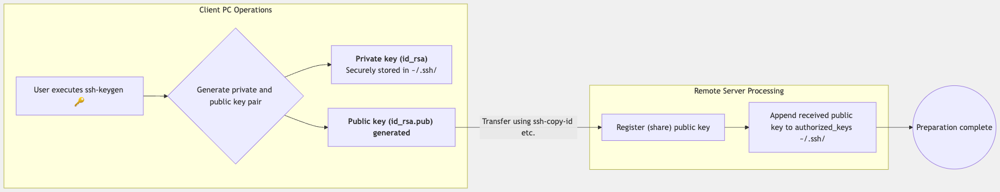
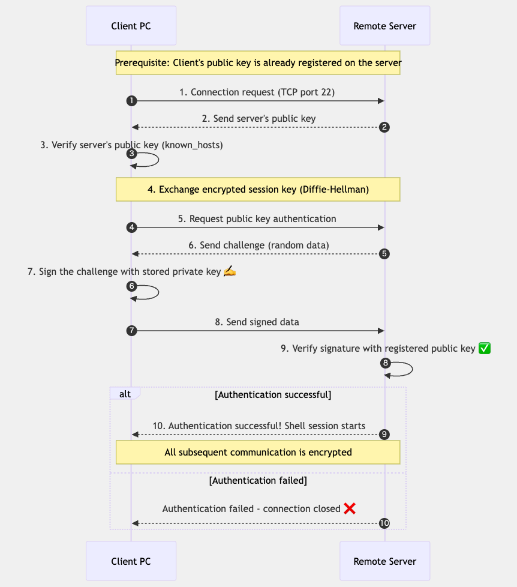
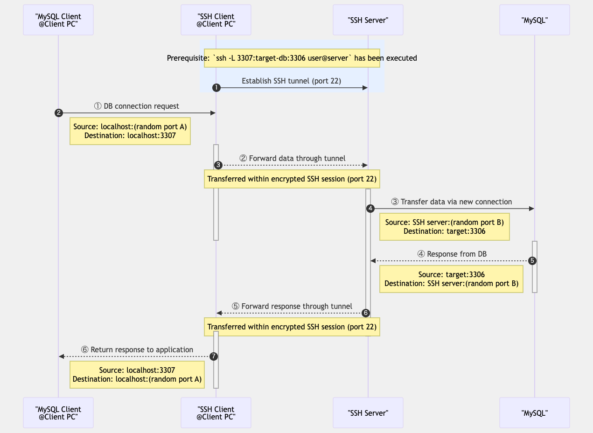
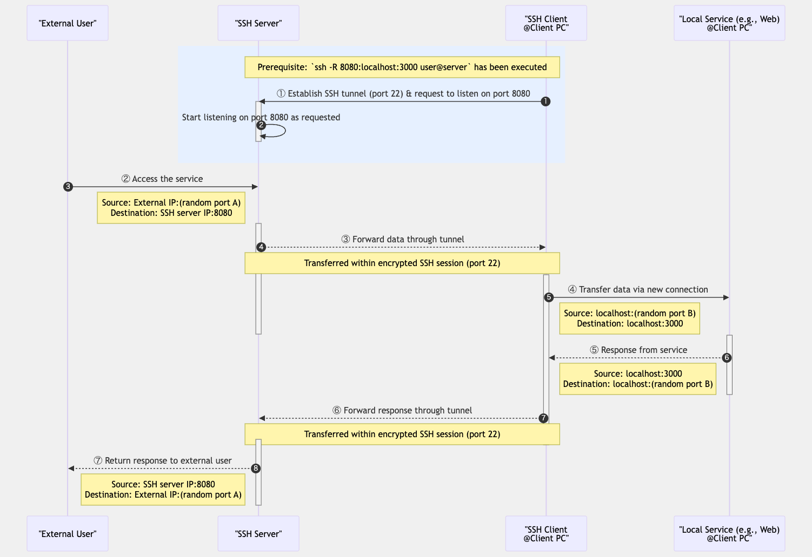
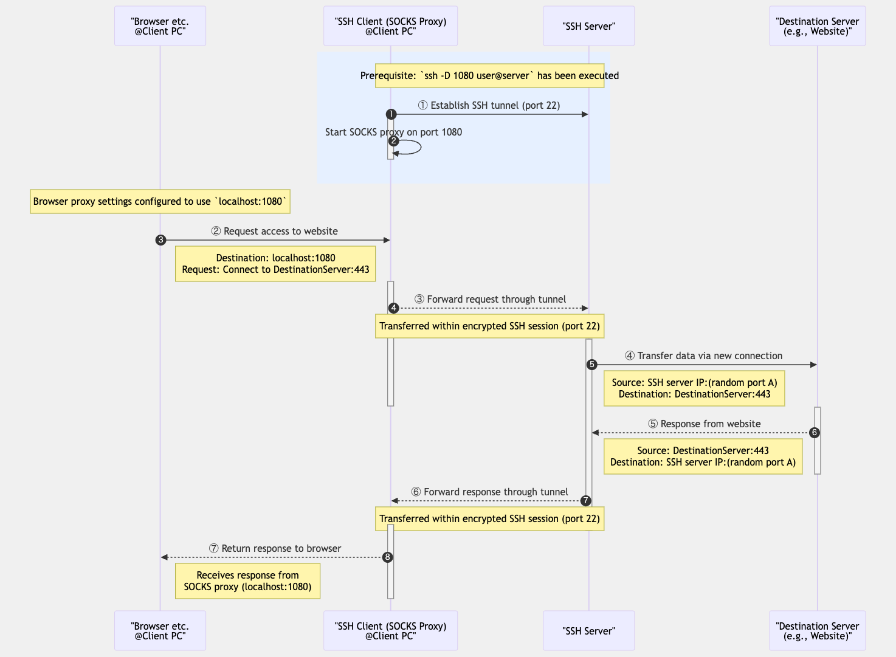

SSH (Secure Shell) is a protocol for secure communication between computers over a network. It is widely used for secure logins to remote servers, file transfers, and remote command execution.
This page provides a detailed explanation from the basic mechanics of SSH, to how to generate SSH keys, and finally to a practical application example of linking a local PC with GitHub. By acquiring this knowledge, you will be able to perform more secure and efficient remote operations and version control.
SSH (Secure Shell) is a protocol for securely conducting data communication over a network. It was developed in 1995 by Finnish researcher Tatu Ylönen and became popular as a replacement for insecure protocols that were widely used at the time (such as Telnet, rlogin, and rsh).
Main features of SSH:
Currently, SSH is an indispensable tool in many situations, including server management, cloud services, and version control systems (Git).
SSH primarily uses the following two authentication methods:
Public key authentication is recommended in many situations because it is superior in terms of both security and convenience. In this authentication method, the process is as follows:
~/.ssh/authorized_keys file on the remote server.
The main advantages of this method are that there is no need to send a password over the network, and since the private key is stored on the local machine, authentication information will not be leaked even if the server-side database is compromised.
There are several types of SSH keys, depending on the cryptographic algorithm used:
For new systems, using Ed25519 or RSA (4096 bits) is generally recommended. However, you need to check which key types are supported by the destination server or service.
SSH keys are typically generated using the ssh-keygen command.
Here are the methods for generating SSH keys on major platforms:
Open a terminal and execute the following command:
# Generate an Ed25519 key (recommended)
ssh-keygen -t ed25519 -C "your_email@example.com"
# Or, generate an RSA 4096-bit key
ssh-keygen -t rsa -b 4096 -C "your_email@example.com"
After executing the command, the following prompts will appear:
~/.ssh/id_ed25519 or ~/.ssh/id_rsa)
In a Windows environment, you can use Git Bash or WSL (Windows Subsystem for Linux) to generate SSH keys with the same command as above.
On Windows 10 and later, you can also generate SSH keys in PowerShell with the following command:
# Generate an Ed25519 key
ssh-keygen -t ed25519 -C "your_email@example.com"
# Or, generate an RSA 4096-bit key
ssh-keygen -t rsa -b 4096 -C "your_email@example.com"
To confirm that the keys were generated successfully, run the following command:
# List the private and public keys
ls -la ~/.ssh
The generated key files are as follows:
id_ed25519 or id_rsa: Private key (NEVER share this)id_ed25519.pub or id_rsa.pub: Public key (register this on the remote
server)
Best practices for securely managing SSH keys:
Using an SSH-Agent allows you to enter your passphrase once, and subsequent connections will be authenticated automatically:
# Start the SSH-Agent
eval "$(ssh-agent -s)"
# Add the key
ssh-add ~/.ssh/id_ed25519
On macOS, you can also save the passphrase to the keychain:
# Add the following to the ~/.ssh/config file
Host *
UseKeychain yes
AddKeysToAgent yes
IdentityFile ~/.ssh/id_ed25519
To establish an SSH connection, you need to perform the appropriate setup on both the client PC and the remote server. Here, we will explain the procedure for setting up an SSH connection using public key authentication.
Setting up an SSH connection is broadly divided into the following two steps:
The following diagram shows the SSH connection setup process:

First, perform the following steps on the client PC (local machine):
ssh-keygen command.
id_ed25519 or
id_rsa) is saved in the ~/.ssh/ directory and protected with appropriate
permissions (600).
id_ed25519.pub
or id_rsa.pub) is prepared for transfer to the remote server.
Next, register the generated public key on the remote server. There are mainly the following methods for this:
Using the ssh-copy-id command, you can transfer and register the public key in one go:
# Basic usage
ssh-copy-id username@remote-server
# Specifying a particular key file
ssh-copy-id -i ~/.ssh/id_ed25519.pub username@remote-server
This command adds the specified public key to the ~/.ssh/authorized_keys file on the remote
server.
Password authentication is required for the initial connection, but once set up, you can connect without
a password thereafter.
In environments where ssh-copy-id is not available, you can perform a manual setup with the
following steps:
# Display and copy the public key content
cat ~/.ssh/id_ed25519.pub
# SSH into the remote server (with password authentication)
ssh username@remote-server
# Execute the following commands on the remote server
mkdir -p ~/.ssh
chmod 700 ~/.ssh
echo "copied_public_key_content" >> ~/.ssh/authorized_keys
chmod 600 ~/.ssh/authorized_keys
You can also transfer the public key file using SCP and then configure it on the remote server:
# Transfer the public key to the remote server
scp ~/.ssh/id_ed25519.pub username@remote-server:/tmp/
# SSH into the remote server
ssh username@remote-server
# Execute the following commands on the remote server
mkdir -p ~/.ssh
chmod 700 ~/.ssh
cat /tmp/id_ed25519.pub >> ~/.ssh/authorized_keys
chmod 600 ~/.ssh/authorized_keys
rm /tmp/id_ed25519.pub
Once the public key registration is complete, verify that you can connect via SSH without a password:
ssh username@remote-server
If you can connect without being prompted for a password, the setup is successful.
If you have trouble connecting, you can use the -v option to see detailed debug
information:
ssh -v username@remote-server
When an SSH connection is established, a complex authentication process takes place between the client and the server. Here, we will explain the detailed process of an SSH connection using public key authentication.
The following diagram shows the sequence of SSH authentication:

~/.ssh/known_hosts file. On the first connection, a prompt is displayed to
confirm the key's fingerprint.
~/.ssh/authorized_keys.
Once authentication is successful, all communication between the client and server is encrypted using the established session key. This protects the communication content from eavesdropping or tampering by third parties.
Points to enhance the security of the SSH authentication process:
/etc/ssh/sshd_config file.
The known_hosts file is a crucial file used by the SSH client to verify the identity of
remote servers.
Here are some additional information and tips for managing the known_hosts file.
~/.ssh/known_hosts (user-specific) or
/etc/ssh/ssh_known_hosts (system-wide).
Commands to efficiently manage the known_hosts file:
# Remove a specific host's key (e.g., if the host's IP or DNS has changed)
ssh-keygen -R hostname
# Pre-add a specific host's key (useful for automation in scripts)
ssh-keyscan -H hostname >> ~/.ssh/known_hosts
# Check the fingerprint of a specific host's key
ssh-keygen -l -F hostname
# Hash the known_hosts file (for improved security)
ssh-keygen -H -f ~/.ssh/known_hosts
Common issues and solutions related to the known_hosts file:
ssh-keygen
-R hostname and then reconnect.
StrictHostKeyChecking=no in ~/.ssh/config, but
this is not recommended in production environments due to security risks.
known_hosts file to prepare for
accidental deletion.
HashKnownHosts yes in ~/.ssh/config to
hash hostnames and reduce the risk of information leakage.
/etc/ssh/ssh_known_hosts
so that all users can connect securely.
Settings related to known_hosts in the ~/.ssh/config file:
Host *
# Specify the location of the known_hosts file
UserKnownHostsFile ~/.ssh/known_hosts.d/default
# Enable hashing of hostnames
HashKnownHosts yes
# Set strict host key checking
# yes: do not connect to unknown hosts
# ask: ask before connecting to unknown hosts (default)
# no: connect to unknown hosts without warning (insecure)
StrictHostKeyChecking ask
# Use a different known_hosts file for a specific host
Host example.com
UserKnownHostsFile ~/.ssh/known_hosts.d/example
SCP and SFTP are tools for securely transferring files using the SSH protocol. Both leverage the encryption features of SSH, allowing for secure file transfers over the internet.
SCP (Secure Copy Protocol) is a file transfer protocol based on the SSH protocol, used to securely copy files between a local machine and a remote host, or between two remote hosts. SCP is implemented as a command-line tool and allows for simple and efficient file transfers.
Main features of SCP:
SFTP (SSH File Transfer Protocol) is a file transfer protocol that operates over the SSH protocol, offering more feature-rich file operations than SCP. SFTP has an operational feel similar to FTP, while ensuring security by using the encryption and authentication functions of SSH.
Main features of SFTP:
The main differences are as follows:
Here are the basic syntax and common usage examples of the SCP command.
scp [options] source destination
Source and destination are specified in the following format:
[username@]hostname:filepath
Copying a local file to a remote server:
# Copy a single file to a remote server
scp local_file.txt username@remote_server:/path/to/destination/
# Copy multiple files to a remote server
scp file1.txt file2.txt username@remote_server:/path/to/destination/
# Copy a directory to a remote server (recursively)
scp -r local_directory/ username@remote_server:/path/to/destination/
Copying a file from a remote server to local:
# Copy a remote file to local
scp username@remote_server:/path/to/remote_file.txt local_directory/
# Copy a remote directory to local (recursively)
scp -r username@remote_server:/path/to/remote_directory/ local_directory/
Copying a file between remote servers:
# Copy a file from server1 to server2
scp username1@server1:/path/to/file.txt username2@server2:/path/to/destination/
-r: Recursively copy directories.-p: Preserves modification times, access times, and permissions from the original file.
-P port: Specifies the port to connect to on the remote host (default is 22).-C: Enables compression.-l limit: Limits the used bandwidth, specified in Kbit/s.-q: Disables the progress meter (quiet mode).-v: Verbose mode. Prints debugging messages.Transferring a large file with compression enabled:
scp -C large_file.zip username@remote_server:/path/to/destination/
Transferring a file using a non-standard port:
scp -P 2222 file.txt username@remote_server:/path/to/destination/
Transferring a file with a bandwidth limit (to reduce impact on other network traffic):
scp -l 1000 large_file.zip username@remote_server:/path/to/destination/
Here are the basic usage and common commands for SFTP.
# SFTP connect to a remote server
sftp username@remote_server
# SFTP connect using a non-standard port
sftp -P 2222 username@remote_server
Once the connection is established, the SFTP prompt (sftp>) will be displayed,
where you can enter SFTP commands.
File transfer commands:
# Download a file from remote to local
get remote_file.txt [local_file.txt]
# Download multiple files
mget *.txt
# Upload a file from local to remote
put local_file.txt [remote_file.txt]
# Upload multiple files
mput *.txt
# Download a directory recursively
get -r remote_directory/
# Upload a directory recursively
put -r local_directory/
Directory operation commands:
# Show the current remote directory
pwd
# Show the current local directory
lpwd
# List the contents of the remote directory
ls [directory]
# List the contents of the local directory
lls [directory]
# Change the remote directory
cd remote_directory
# Change the local directory
lcd local_directory
# Create a remote directory
mkdir remote_directory
# Create a local directory
lmkdir local_directory
File management commands:
# Rename or move a remote file
rename old_name new_name
# Delete a remote file
rm remote_file
# Delete a remote directory
rmdir remote_directory
# Change permissions of a remote file
chmod 644 remote_file
# Change owner/group of a remote file
chown user:group remote_file
Other commands:
# Show help
help
# Exit the SFTP session
exit or bye or quit
You can also put SFTP commands in a file for batch processing:
# Create a command file
echo "cd /remote/directory
get file1.txt
get file2.txt
put local_file.txt
bye" > sftp_commands.txt
# Execute the command file
sftp -b sftp_commands.txt username@remote_server
In addition to the command-line SFTP, there are many graphical SFTP clients:
Here are the best practices and precautions for using SCP and SFTP securely.
Besides SCP and SFTP, there are other alternatives for secure file transfer:
The developers of OpenSSH are gradually deprecating the use of SCP due to known security issues in the SCP protocol and recommend using SFTP instead. In future OpenSSH versions, the SCP command may be changed to use the SFTP protocol internally.
To set up an SSH connection with GitHub, follow these steps:
# macOS
cat ~/.ssh/id_ed25519.pub | pbcopy
# Windows (PowerShell)
Get-Content ~/.ssh/id_ed25519.pub | Set-Clipboard
# Linux
cat ~/.ssh/id_ed25519.pub | xclip -selection clipboard
ssh -T git@github.com
On the first connection, a message will appear to confirm the server's fingerprint. Type "yes" to
continue.
If the connection is successful, a message like the following will be displayed:
Hi username! You've successfully authenticated, but GitHub does not provide shell access.
After setting up the SSH connection, here is how to use SSH for operations with GitHub repositories:
On the GitHub repository page, click the "Code" button, select the "SSH" tab, and copy the URL. Then, clone the repository with the following command:
git clone git@github.com:username/repository.git
To change from HTTPS to SSH, use the following commands:
# Check the current remote URL
git remote -v
# Change the remote URL to SSH
git remote set-url origin git@github.com:username/repository.git
# Verify the change
git remote -v
With the SSH connection configured, you can push and pull with the usual Git commands without entering a password:
# Push changes
git push origin main
# Pull changes
git pull origin main
How to deal with problems when connecting to GitHub via SSH:
If the ssh -T git@github.com command fails:
ssh -vT git@github.com to see detailed
information.
ssh-add -l.chmod 600
~/.ssh/id_ed25519).
If you see a "Permission denied (publickey)" error:
ssh -i
~/.ssh/id_ed25519 -T git@github.com.
ssh-add
-l.
X11 Forwarding is a feature of SSH that allows you to forward the display of graphical applications running on a remote server to your local machine. This makes it possible to operate GUI applications on a remote server on your local machine's screen.
X11 refers to protocol version 11 of the X Window System, a windowing system widely used in Unix-like systems. This protocol adopts a client-server model to provide a graphical user interface (GUI).
How X11 Forwarding works:
This feature is very convenient when you need to use graphical tools on a remote server, or when developing or debugging applications on a remote machine.
To use X11 forwarding, you need to configure it on both the client and server sides:
Enable X11 forwarding in the SSH server (sshd) configuration file (usually
/etc/ssh/sshd_config):
X11Forwarding yes
X11DisplayOffset 10
X11UseLocalhost yes
After changing the configuration, you need to restart the SSH service:
# For Linux (using systemd)
sudo systemctl restart sshd
# For macOS
sudo launchctl unload /System/Library/LaunchDaemons/ssh.plist
sudo launchctl load /System/Library/LaunchDaemons/ssh.plist
Add the following settings to the client-side SSH configuration file (~/.ssh/config):
Host *
ForwardX11 yes
ForwardX11Trusted yes
Alternatively, you can use the -X or -Y option when connecting:
-X: Enables basic X11 forwarding (with security restrictions).-Y: Enables trusted X11 forwarding (with fewer security restrictions).To use X11 forwarding, you need the following software:
Here are examples of running remote applications using X11 forwarding:
Connect via SSH with X11 forwarding enabled:
# Basic X11 forwarding
ssh -X username@remote-server
# Trusted X11 forwarding
ssh -Y username@remote-server
After connecting, launch a graphical application on the remote server:
# Examples of simple graphical applications
xclock
xeyes
firefox
gedit
The application's window will appear on your local machine's screen.
X11 forwarding is convenient, but it can consume a lot of network bandwidth. Tips for improving performance:
ssh -XC username@remote-server (the
-C option enables compression).
X11 forwarding is convenient, but there are security considerations:
-Y option relaxes security
restrictions and should only be used with trusted servers.
-X option instead of -Y
whenever possible.
If X11 forwarding is a security concern, you can consider the following alternatives:
Port forwarding (also called SSH tunneling) is a technique that uses the SSH protocol to transfer data through an encrypted tunnel. This allows for secure access to resources that are normally inaccessible and communication that bypasses firewalls.
Main advantages of Port Forwarding:
Port forwarding is utilized for various purposes, such as database management, remote desktop connections, and private web Browse.
There are mainly the following three types:
Local port forwarding forwards a port on the local machine to a port on the remote server. When you connect to the specified port on the local machine, that connection is forwarded through the SSH tunnel to the specified port on the remote server.
Common syntax:
ssh -L local_port:destination_host:destination_port username@ssh_server
For example, when connecting to a remote database server:
# Connect from local port 3307 to the remote server's MySQL port (3306)
ssh -L 3307:localhost:3306 username@remote-server
After this setup, connecting to localhost:3307 on the local machine will forward the
connection to localhost:3306 on the remote server.

Remote port forwarding forwards a port on the remote server to a port on the local machine. This is the reverse of local port forwarding and is used, for example, to access a service on a local machine from the internet.
Common syntax:
ssh -R remote_port:destination_host:destination_port username@ssh_server
For example, to make a web server running locally available from a remote location:
# Connect from remote server's port 8080 to the local web server (port 3000)
ssh -R 8080:localhost:3000 username@remote-server
After this setup, connecting to localhost:8080 on the remote server will forward the
connection to localhost:80 on the local machine.

Dynamic port forwarding sets up a SOCKS proxy and forwards traffic to multiple destinations through an SSH tunnel. This is useful for tunneling all traffic from web Browse or other applications.
Common syntax:
ssh -D local_port username@ssh_server
For example, to set up a SOCKS proxy on local port 1080:
# Set up a SOCKS proxy on local port 1080
ssh -D 1080 username@remote-server
After this setup, if you specify localhost:1080 as the SOCKS proxy in your browser or other
applications,
all traffic will be sent from the remote server through the SSH tunnel.

Port forwarding is a secure means of communication, but if not properly configured and managed, it can pose security risks:
0.0.0.0 (all interfaces)
instead of localhost can allow unintended access.
localhost.
Settings in the SSH server (/etc/ssh/sshd_config) to control port forwarding:
# Allow/deny all port forwarding
AllowTcpForwarding yes/no
# Allow only local port forwarding
AllowTcpForwarding local
# Allow/deny remote port forwarding
GatewayPorts yes/no
# Restrictions for specific users or groups
Match User username
AllowTcpForwarding yes
PermitOpen localhost:3306 localhost:5432
After changing these settings, you need to restart the SSH service.
Best practices for using SSH more securely:
Common issues that occur when using SSH and their solutions:
~/.ssh/known_hosts file.
ServerAliveInterval and ServerAliveCountMax
in ~/.ssh/config.
~/.ssh directory and
key files (directory should be 700, private key 600).
~/.ssh/config file, specify which key
to use for each host.
-X or
-Y option and ensure the necessary packages are installed.